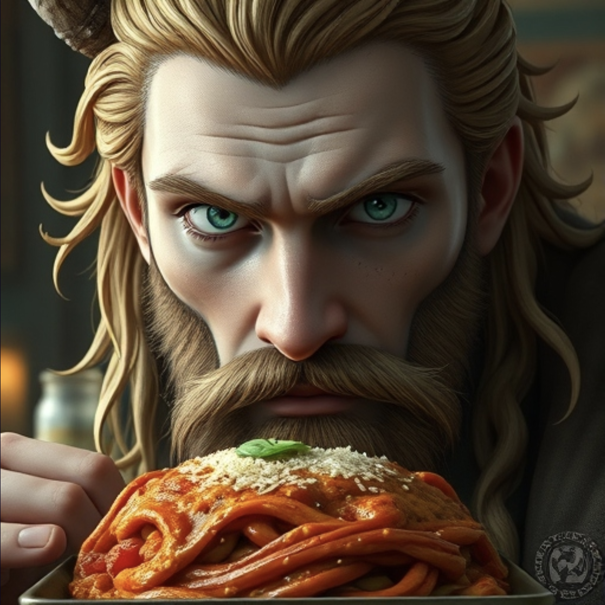

Crows Feet Lasagna
< back to recipes

Description
This Lasagna Recipe is easy to make with a creamy ricotta cheese mixture, savory meat sauce, and mozzarella cheese. BONUS: it’s make-ahead and freezer-friendly!
Ingredients
- Noodles
- 2 Crows
- Tomato
- Cheese
- Ragú
- Spices
Steps
- Preheat Oven to 550 degrees
- Put Lasagna In Oven for 48 hours
- Collect Insurance Money